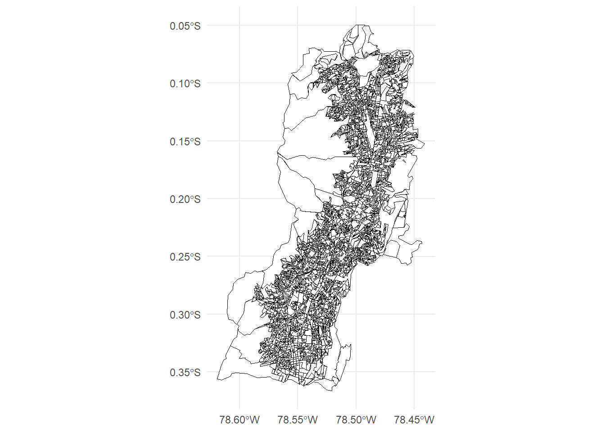
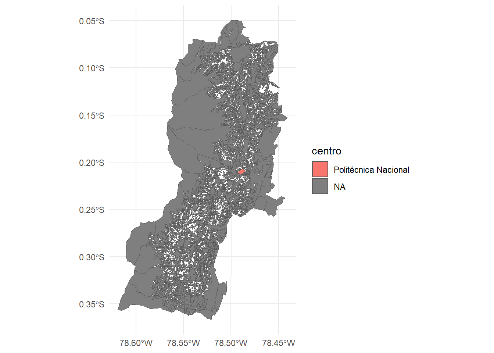
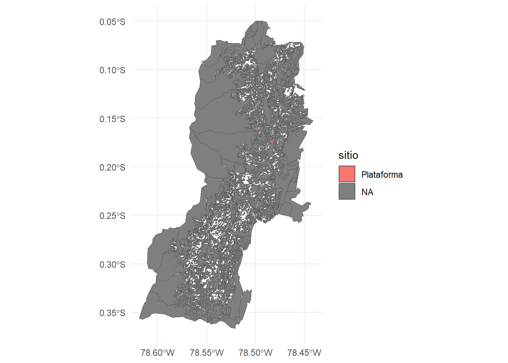
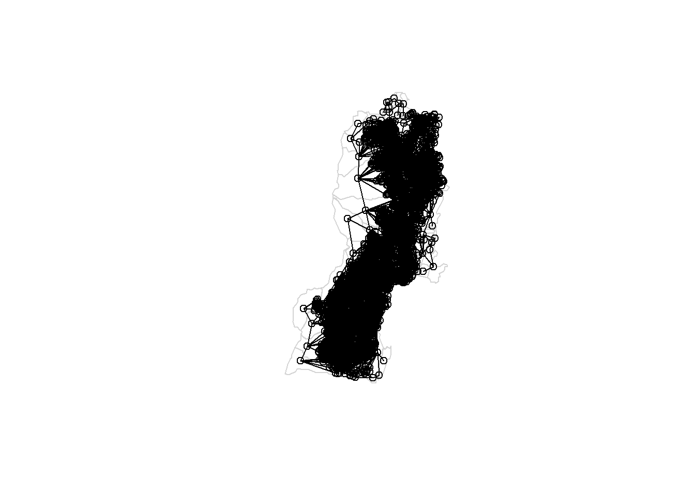
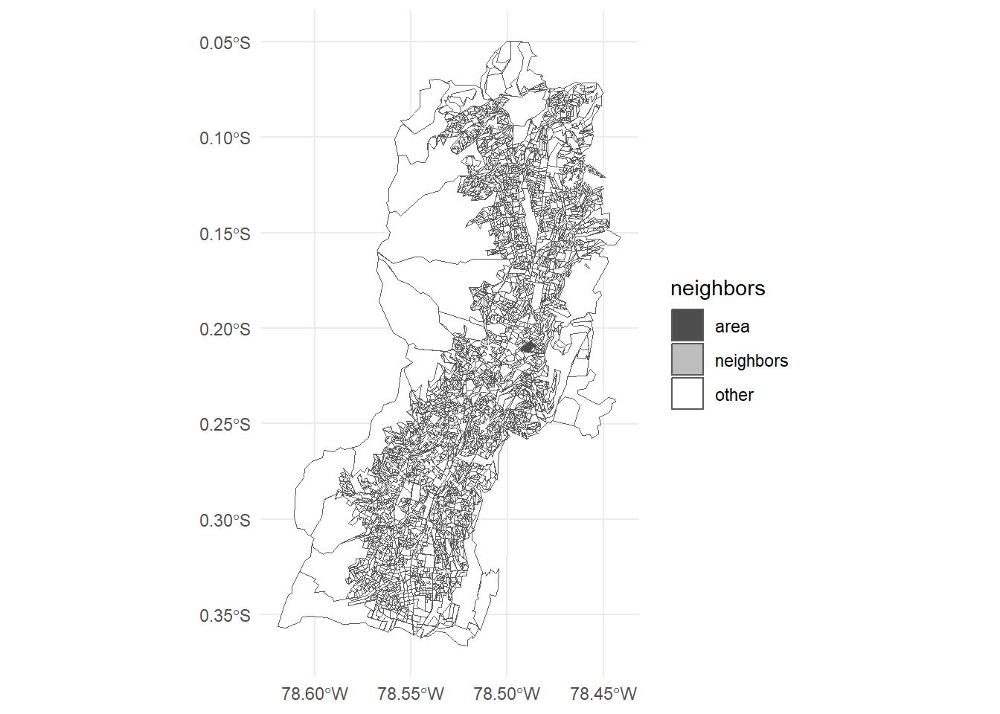
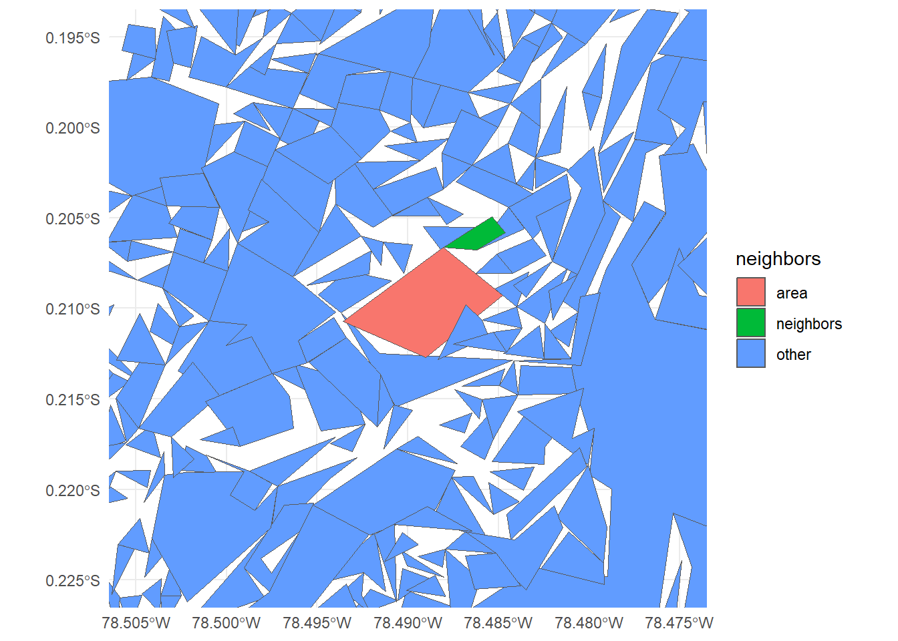
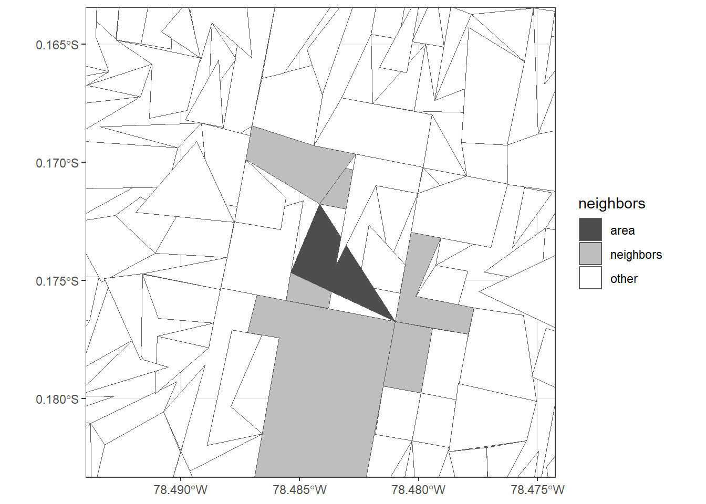
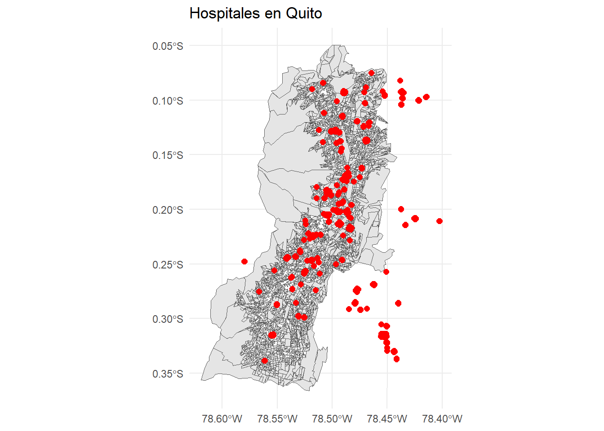
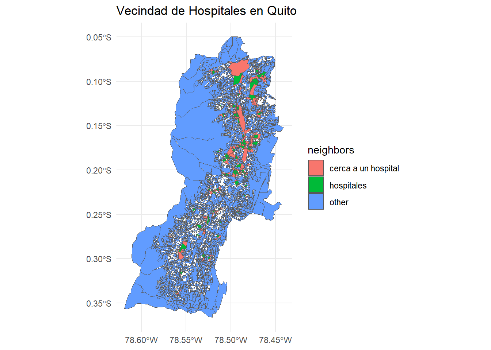

En esta clase se introducirá el concepto de vecindad en el análisis estadístico espacial. Utilizaremos los datos del geo portal del INEC, disponible en Geoportal del INEC. Esta base de datos es muy amplia y contiene una gran cantidad de información geoespacial detallada. Debido a su tamaño, leeremos y procesaremos los datos gradualmente.
Emplearemos las bibliotecas osmdata, sf, y tidyverse en R para acceder y manipular los datos geoespaciales. En específico, utilizaremos funciones como getbb, opq, y osmdata_sf para obtener datos de OpenStreetMap, y st_intersects y ggplot para analizar y visualizar los datos.
A lo largo de esta clase, exploramos varios ejemplos, de los cuales vale la pena recordar que el análisis de datos espaciales tiene aplicaciones en diversas áreas, como la geografía, la economía, la salud, y la planificación urbana. A continuación, presentamos los ejemplos que abordaremos en esta clase:
Análisis básico de ubicación - situación en ubicaciones individuales: Identificaremos el sector censal al que pertenece la Escuela Politécnica Nacional y determinaremos sus vecinos utilizando el modelo queen.
Interacciones espaciales como comunicación, información, migración, rol de la distancia: Aplicaremos el mismo análisis para la Plataforma Gubernamental Financiera, observando cómo las ubicaciones vecinas pueden influir en la comunicación y el flujo de personas.
Patrones puntuales espaciales (agrupamiento de observaciones puntuales, relaciones entre ellas, importancia de la dirección): Evaluaremos el caso de una persona que busca mudarse a una nueva casa y quiere estar cerca de un hospital, analizando cómo los patrones de ubicación de los hospitales pueden influir en su decisión.
Efectos de escala: Discutiremos cómo las diferentes escalas de análisis espacial pueden cambiar nuestra comprensión de la vecindad y la interacción entre ubicaciones.
Difusión de procesos económicos, innovación y cultura: Exploraremos cómo la proximidad a ciertos puntos de interés, como hospitales y centros educativos, puede afectar la difusión de procesos económicos y culturales.
Autocorrelación espacial - la relación cuantitativa entre ubicaciones: Analizaremos la autocorrelación espacial para comprender cómo las características de una ubicación pueden influir en las ubicaciones vecinas.
Estos ejemplos nos permitirán aplicar y comprender mejor los conceptos de vecindad en el análisis estadístico espacial, utilizando datos reales y herramientas de R para extraer, analizar y visualizar la información geoespacial.
La Matriz de Vecindad en base a la “contigüidad”
La matriz de vecindad es una representación matemática que describe la relación espacial entre diferentes polígonos en un conjunto de datos geoespaciales. Los dos modelos principales de vecindad son el modelo rook y el modelo queen.
Modelo Rook: Define vecinos como aquellos polígonos que comparten un borde común.
Modelo Queen: Define vecinos como aquellos polígonos que comparten un borde o un vértice común.
Cargando y Preparando los Datos
Primero, cargamos los datos de la base de datos geoespacial del INEC:
# Cargar la geo database nacional del INECst_layers("../data/GEODATABASE_NACIONAL_2021/GEODATABASE_NACIONAL_2021.gdb/")
Driver: OpenFileGDB
Available layers:
layer_name geometry_type features fields crs_name
1 aream_a Multi Polygon 1847 8 WGS 84 / UTM zone 17S
2 ca04_a Multi Polygon 3951938 9 WGS 84 / UTM zone 17S
3 ejes_l Multi Line String 546887 9 WGS 84 / UTM zone 17S
4 ingresos_l Multi Line String 4153735 5 WGS 84 / UTM zone 17S
5 loc_p Point 59880 5 WGS 84 / UTM zone 17S
6 man_a Multi Polygon 234172 11 WGS 84 / UTM zone 17S
7 sec_a Multi Polygon 52898 7 WGS 84 / UTM zone 17S
8 viv_p Multi Point 5578282 9 WGS 84 / UTM zone 17S
9 zon_a Multi Polygon 5888 6 WGS 84 / UTM zone 17S
# Cargar la capa "sec_a"zonas <-st_read("../data/GEODATABASE_NACIONAL_2021/GEODATABASE_NACIONAL_2021.gdb/",layer ="sec_a")
Reading layer `sec_a' from data source
`C:\Users\alex_ergostats\Documents\geo_stats_2024_nb\data\GEODATABASE_NACIONAL_2021\GEODATABASE_NACIONAL_2021.gdb'
using driver `OpenFileGDB'
Simple feature collection with 52898 features and 7 fields
Geometry type: MULTIPOLYGON
Dimension: XY
Bounding box: xmin: -685704.9 ymin: 9445216 xmax: 1147852 ymax: 10162550
Projected CRS: WGS 84 / UTM zone 17S
# Filtrar por la parroquia de interéspichincha <- zonas %>%filter(str_detect(parroquia, "^17"))# Remover geometrías vacíaspichincha <- pichincha %>%mutate(tam =map_dbl(Shape, length))# %>% # filter(tam > 0)
Simplificación y Visualización Inicial
Simplificamos las geometrías y creamos un mapa inicial de la parroquia 170150:
# Simplificar las geometríaspichincha <- pichincha %>%st_simplify(dTolerance =100)# Crear el mapa inicialmapa_proyecto <- pichincha %>%filter(parroquia =="170150") %>%ggplot() +geom_sf(fill ="white", color ="black") +theme_minimal()# Guardar el mapa# ggsave("mapa_proyecto.png", plot = mapa_proyecto, dpi = 300)# Mostrar el mapamapa_proyecto

Ejemplo: Vecindad de la Politécnica
Identificamos los vecinos de la Politécnica:
# Coordenadas de la Politécnica en WGS84politecnica <-tibble(lat =-0.211872, long =-78.490520) %>%st_as_sf(coords =c("long", "lat"), crs =4326) %>%st_transform(32717)# Encontrar intersecciones con la Politécnicainter <-st_intersects(politecnica, pichincha)# Identificar vecinospichincha <- pichincha %>%mutate(centro =if_else(sec =="170150192004", "Politécnica Nacional", NA_character_))# Crear mapa con vecinos de la Politécnicamapa_vecinos_politecnica <- pichincha %>%filter(parroquia =="170150") %>%ggplot() +geom_sf(aes(fill = centro)) +theme_minimal()# Mostrar el mapamapa_vecinos_politecnica

Ejemplo: Vecindad de la Plataforma
Identificamos los vecinos de la Plataforma:
# Coordenadas de la Plataforma en WGS84plataforma <-tibble(lat =-0.173385, long =-78.484121) %>%st_as_sf(coords =c("long", "lat"), crs =4326) %>%st_transform(32717)# Encontrar intersecciones con la Plataformainter <-st_intersects(plataforma, pichincha)# Identificar vecinospichincha <- pichincha %>%mutate(sitio =if_else(sec =="170150155010", "Plataforma", NA_character_))# Crear mapa con vecinos de la Plataformamapa_vecinos_plataforma <- pichincha %>%filter(parroquia =="170150") %>%ggplot() +geom_sf(aes(fill = sitio)) +theme_minimal()# Mostrar el mapamapa_vecinos_plataforma

Creación de la Matriz de Vecindad
Creamos la matriz de vecindad para los polígonos:
# Crear matriz de vecindaddmq <- pichincha %>%filter(parroquia =="170150") # Remover geometrías vacíasdmq <- dmq[!st_is_empty(dmq),]# Crear la lista de vecinos usando el modelo queennb <- spdep::poly2nb(dmq, queen =TRUE)# Visualizar la lista de vecinoshead(nb)
# Graficar los vecinosplot(st_geometry(dmq), border ="lightgray")plot.nb(nb, st_geometry(dmq), add =TRUE)

Visualización con Vecinos
Visualizamos los vecinos de un polígono específico (ID: 170150192004):
id <-"170150192004"# ID del área# Identificar posición del IDpos <-which(dmq$sec == id)# Asignar categorías de vecinosdmq$neighbors <-"other"dmq$neighbors[pos] <-"area"dmq$neighbors[nb[[pos]]] <-"neighbors"# Crear el gráfico con los vecinosmapa_proyecto_vecinos <- dmq %>%ggplot() +geom_sf(aes(fill = neighbors)) +theme_minimal() +scale_fill_manual(values =c("gray30", "gray", "white"))# Guardar el mapa# ggsave("mapa_proyecto_vecinos.png", plot = last_plot(), dpi = 300)# Mostrar el mapamapa_proyecto_vecinos

Zoom en la Politécnica y Plataforma
Finalmente, hacemos zoom en las coordenadas de la Politécnica y la Plataforma:
# Definir límites de zoom para la Politécnicazoom_to <-c(-78.490520, -0.211872) # Latitud y Longitud correctaslon_bounds <-c(-78.505, -78.475) # Ajustar según sea necesariolat_bounds <-c(-0.225, -0.195) dmq <-st_transform(dmq, crs =4326)# Crear el gráfico con zoommapa_zoom <- dmq %>%ggplot() +geom_sf(aes(fill = neighbors)) +theme_minimal() +coord_sf(xlim = lon_bounds, ylim = lat_bounds)# Mostrar el gráfico con zoommapa_zoom

Opcion B:
id <-"170150155010"# ID del área# Identificar posición del IDpos <-which(dmq$sec == id)# Asignar categorías de vecinosdmq$neighbors <-"other"dmq$neighbors[pos] <-"area"dmq$neighbors[nb[[pos]]] <-"neighbors"dmq <-st_transform(dmq, crs =32717)plataforma <-c(-78.484121, -0.173385)# Convertir las coordenadas de lat/long a UTM (EPSG:32717)plataforma_sf <-st_sfc(st_point(plataforma), crs =4326) %>%st_transform(crs =32717)# Extraer las coordenadas UTMplataforma_utm <-st_coordinates(plataforma_sf)# Definir el zoom (ajustar según sea necesario)zoom_level <-1000# Esto define cuánto quieres acercar# Definir los límites de visualización en coordenadas UTMlon_bounds <-c(plataforma_utm[1] - zoom_level, plataforma_utm[1] + zoom_level)lat_bounds <-c(plataforma_utm[2] - zoom_level, plataforma_utm[2] + zoom_level)# Crear el gráfico con los límites definidosggplot(dmq) +geom_sf(aes(fill = neighbors)) +theme_bw() +scale_fill_manual(values =c("gray30", "gray", "white")) +coord_sf(xlim = lon_bounds, ylim = lat_bounds)

Continuación: Extracción y Visualización de Hospitales
En esta sección, aprenderemos a extraer las coordenadas de los hospitales en Quito desde OpenStreetMap (OSM) y a visualizar su vecindad en un mapa utilizando R. Utilizaremos los conceptos de la matriz de vecindad y los modelos de vecindad rook y queen.
Primero, definimos el área de interés (Quito, Ecuador) y realizamos una consulta para obtener los hospitales en esta área.
# Definir el área de interés (Quito, Ecuador)bbox <-getbb("Quito, Ecuador")# Realizar la consulta para obtener hospitaleshospitales <-opq(bbox = bbox) %>%add_osm_feature(key ="amenity", value ="hospital") %>%osmdata_sf()# Extraer los puntos de los hospitaleshospitales_puntos <- hospitales$osm_points
A continuación, visualizamos los hospitales en un mapa junto con los polígonos de dmq.
dmq %>%ggplot() +geom_sf() +geom_sf(data = hospitales_puntos, color ="red", size =2) +theme_minimal() +ggtitle("Hospitales en Quito")

Ahora identificamos los polígonos que están cerca de los hospitales. Transformamos las coordenadas de los hospitales al mismo CRS que dmq y utilizamos st_intersects para identificar los polígonos que intersectan con los hospitales.
# Transformar las coordenadas de los hospitales al mismo CRS que `dmq`con_hospitales <-st_intersects(x = hospitales_puntos %>%st_transform(crs =32717),y = dmq) %>%unlist() %>%unique()# Obtener los IDs de los polígonos que intersectan con hospitalesids <- dmq[con_hospitales,] %>%pull(sec)
Asignamos categorías de vecindad a los polígonos en función de su proximidad a los hospitales. Encontramos las posiciones de los vecinos de los polígonos con hospitales y asignamos categorías de vecindad ("other", "cerca a un hospital", y "hospitales").
# Encontrar las posiciones de los vecinos de los polígonos con hospitalesposiciones_vecinos <-map(ids, function(id){ pos <-which(dmq$sec == id) nb[[pos]]}) %>%unlist() %>%unique() # Asignar categorías de vecinosdmq$neighbors <-"other"dmq$neighbors[posiciones_vecinos] <-"cerca a un hospital"dmq$neighbors[which(dmq$sec %in% ids)] <-"hospitales"# Visualizar los polígonos categorizados por vecindaddmq %>%ggplot() +geom_sf(aes(fill = neighbors)) +theme_minimal() +ggtitle("Vecindad de Hospitales en Quito")

Con esto, hemos completado la extracción de los hospitales desde OpenStreetMap, su visualización en un mapa junto con los polígonos de dmq, y la identificación de la vecindad de estos hospitales.
{kind=link}